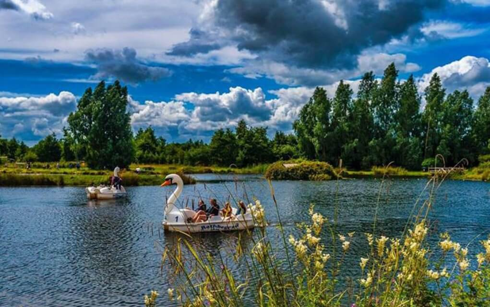

Rathbeggan Lakes, Batterstown Co. Meath
Set in the gently sloping valley of the River Tolka, this beautiful springfed stillwater complex could be miles from anywhere. Hard to believe it is less than 10 minutes from Dublin's busy M50. With a choice of 4 different fishing lakes and a selection of other family friendly activities on offer, there is something for everyone to enjoy.